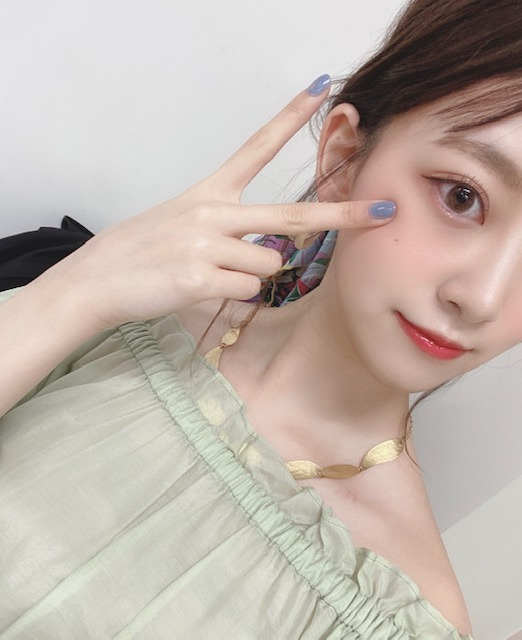

2020/0229Sat#TGC
U by spick & span さんの服を着て
ランウェイを歩かせていただきました☺︎
トリを務めさせていただき、光栄に思います。
衣装は、最近ハマってるライトグリーン色だし
オフショルで透け感のある素材でタイプすぎました！
ヘアバンダナもかわいいの
メイクはヨーロッパの女の子をイメージして
MiMCとhinceのチークを足して
まぶたと目の下にはくすみピンクとオレンジを足して
儚げ囲み目にしました☺︎
口紅もhinceでリップはdiorのオイルです。
前髪は珍しくセンター分け。

くすみブルーのネイルはTHREEのです☺︎
この後はTGCにて乃木坂46のライブ！
頑張ります〜(^^)
では！
2020/02/29 18:00
コメント(220)
こんばんは。
TGCランウェイ、ライブお疲れ様でした。
見ました。
TGCランウェイ、ライブお疲れ様でした。
見ました。
未央奈ー
無観客でもかわいいぞー
ライブも観たよー
ランウェイよりもさらにかわいかったぞー
無観客でもかわいいぞー
ライブも観たよー
ランウェイよりもさらにかわいかったぞー
未央奈ちゃん。東京ガールズコレクション出演おめでとう。今回残念ながら観客なしでのと、報道ありで、いつもとはおもむきが、違ったことでしょう。服の色いい色ですね。綺麗な色です。わたしも、好きないろです。
お疲れッスみおな♪ヽ(´▽｀)/マイナビ マイナビ
みおな、こんばんは。更新ありがとう！近況報告ありがとうございます。 では、毎日みおなに良いこと沢山ありますように！ おやすみおな！！
TGCお疲れ様でした！
未央奈はどんな服着ても似合うね
いつも心の支えになっています。
コロナとか体調に気をつけてね！
仕事頑張ります。
未央奈はどんな服着ても似合うね
いつも心の支えになっています。
コロナとか体調に気をつけてね！
仕事頑張ります。
LINELIVE観ましたよー！
格好いいし
可愛いし
もうなんなんですか
体調管理気をつけてくださいね！
格好いいし
可愛いし
もうなんなんですか
体調管理気をつけてくださいね！
未央奈、めっちゃ綺麗ー！
どこまで綺麗になるのー！！！
どこまで綺麗になるのー！！！
めっちゃ可愛い綺麗！！
デコ出しも大人っぽくて好き！！
どんな髪型も似合うってほんとに羨ましい
可愛いと綺麗の両方をもってるみおなちゃんはめっちゃ最強だと思う！！
また更新まってるね✨
デコ出しも大人っぽくて好き！！
どんな髪型も似合うってほんとに羨ましい
可愛いと綺麗の両方をもってるみおなちゃんはめっちゃ最強だと思う！！
また更新まってるね✨
トリ！
･･･はい。
ライトグリーンですか～
お写真の？
ファンタジー世界の
エルフの女性
と勝手に～
いいね～♪
諸々。
眼福。眼福。
･･･はい。
ライトグリーンですか～
お写真の？
ファンタジー世界の
エルフの女性
と勝手に～
いいね～♪
諸々。
眼福。眼福。
未央奈さん、こんばんは
ガールズコレクション
お疲れ様でした(^_^)
衣装にメイク、髪型
どれをとっても似合ってます！
ヘアバンダナ素敵ですね
青空の下
デートしたいですf(^_^)
応援しています
ガールズコレクション
お疲れ様でした(^_^)
衣装にメイク、髪型
どれをとっても似合ってます！
ヘアバンダナ素敵ですね
青空の下
デートしたいですf(^_^)
応援しています
TGC見たよ〜〜〜かわいかったあさすが未央奈！！
未央奈のブログ読むのすごい好きだからすごく楽しみにしてる！いっぱい見れて嬉しい！！足にもネイルしてる？？何色？？何色にしようか今迷ってるから未央奈と一緒にしたい！！
未央奈のブログ読むのすごい好きだからすごく楽しみにしてる！いっぱい見れて嬉しい！！足にもネイルしてる？？何色？？何色にしようか今迷ってるから未央奈と一緒にしたい！！
一番最初にランウェイしたんだね！
トリなんて凄いじゃん
緑色の衣装似合うし珍しいセンター分けまで
さすが違うね
トリなんて凄いじゃん
緑色の衣装似合うし珍しいセンター分けまで
さすが違うね
未央奈ちゃん、TGCお疲れさまでした。カッコ良くもあり、綺麗でした！
ライブも良かったよー！
ライブも良かったよー！
乃木坂ツイッターで堀ちゃんの写真を見て、「綺麗！！」と思い、ブログを開いたら、もっと色んな写真が有って嬉しくなりました✌あの写真、お天気ノリさんに見せたら？いつも堀ちゃんのことを子供扱いするから、感想を聴いてみたら？でも堀ちゃんも今年24才だから大人扱いされたいかな？バスラお疲れ様でした＼(^-^)／いろんなメンバーから大変だった、って聴いてるからね。来週はまいちゅんのANNに堀北コンビで出るんだってね✌2期生同士の楽しいお喋り楽しみにしてます＼(^-^)／
忙しいのにブログ更新ありがとう！
とっても素敵な服とメイクですね！無観客の中皆さん堂々と凄かったです…
ライブも良かったです！キラキラと輝いていました！！
お疲れ様です！
とっても素敵な服とメイクですね！無観客の中皆さん堂々と凄かったです…
ライブも良かったです！キラキラと輝いていました！！
お疲れ様です！
未央奈ブログ更新ありがと‼️透明感抜群透き通ってる、また一段と綺麗になってる、、頑張ってね⁉️
TGCお疲れ様です。オフショル、前髪センター分け、すごく素敵。メイクも大人っぽい。ブログに書いてたメイクを真似してみます。ありがとー未央奈ちゃん。
楽しいブログありがとー。センター分けのほうが、新鮮ですごく好きな髪形です。おでこ出しセンター分けの髪形でいろんな番組などに出てもらいたいという願望です。
本当に雰囲気が、違ったので好きです。未央奈ちゃん。
２期生の、ほうがデビューから堀未央奈、推しでした。
どんどん成長していく未央奈ちゃんを今後も応援していきます。サイリウム、推しタオル、着けてこれからも応援します。更に成長した堀未央奈を、見せて下さい。期待して今日は寝ます。常にフロントで頑張って下さい。ありがとー。いっぱいいっぱい元気を下さい。それではバイバイ。
楽しいブログありがとー。センター分けのほうが、新鮮ですごく好きな髪形です。おでこ出しセンター分けの髪形でいろんな番組などに出てもらいたいという願望です。
本当に雰囲気が、違ったので好きです。未央奈ちゃん。
２期生の、ほうがデビューから堀未央奈、推しでした。
どんどん成長していく未央奈ちゃんを今後も応援していきます。サイリウム、推しタオル、着けてこれからも応援します。更に成長した堀未央奈を、見せて下さい。期待して今日は寝ます。常にフロントで頑張って下さい。ありがとー。いっぱいいっぱい元気を下さい。それではバイバイ。
みおな
28日のブログから引き続きコメントします
TGCお疲れ様でした
今日はラインライブで観てました
よく考えるとみおなのランウェイ歩く姿見るの初めてでした
シースルーみたいな服で、出てきて可愛かったです
みおなでちょうど、一区切りだったから、みおなだけ帰る時も映ってて長めに映っててラッキーでした（ウィンクも可愛かった）
おでこ出てたのも可愛かったし、改めて見ると顔の形が綺麗だね
乃木坂ライブも観ました
overture、インフルエンサー、ガールズルール、逃げ水、シンクロニシティとすごく豪華でファンいたら盛り上がるやつばっかりだったね（実際に画面越しに盛り上がってた笑）
乃木坂で1番好きな曲のシンクロニシティが来た時は嬉しかったです
今回はコロナの影響で無観客だったけど、誰もいなくてもプロ意識を持って、頑張ってたからすごいと思いました
今日は長い時間お疲れ様！
体調に気をつけてまた頑張って下さい
また更新待ってます
ありがとうございました（28日のブログコメントもよかったらご覧ください）
28日のブログから引き続きコメントします
TGCお疲れ様でした
今日はラインライブで観てました
よく考えるとみおなのランウェイ歩く姿見るの初めてでした
シースルーみたいな服で、出てきて可愛かったです
みおなでちょうど、一区切りだったから、みおなだけ帰る時も映ってて長めに映っててラッキーでした（ウィンクも可愛かった）
おでこ出てたのも可愛かったし、改めて見ると顔の形が綺麗だね
乃木坂ライブも観ました
overture、インフルエンサー、ガールズルール、逃げ水、シンクロニシティとすごく豪華でファンいたら盛り上がるやつばっかりだったね（実際に画面越しに盛り上がってた笑）
乃木坂で1番好きな曲のシンクロニシティが来た時は嬉しかったです
今回はコロナの影響で無観客だったけど、誰もいなくてもプロ意識を持って、頑張ってたからすごいと思いました
今日は長い時間お疲れ様！
体調に気をつけてまた頑張って下さい
また更新待ってます
ありがとうございました（28日のブログコメントもよかったらご覧ください）
こんばんわん
１日お疲れ様！！
合間をぬってのブログ更新ありがとう！
お洋服が堀ちゃんと合っていて可愛い
私もライトグリーン好きです
ではまた(*´∇｀*)
１日お疲れ様！！
合間をぬってのブログ更新ありがとう！
お洋服が堀ちゃんと合っていて可愛い
私もライトグリーン好きです
ではまた(*´∇｀*)
自信満々やないかーぃ
みおちゃんブログありがと♡
TGCお疲れさま。
めちゃめちゃキレイでカッコよかったです。
TGCお疲れさま。
めちゃめちゃキレイでカッコよかったです。
めっちゃくちゃ似合っててすんごい可愛いです(๑'ᴗ'๑)
尊い、、、、
肌が白くなる方法知りたいです!!中学生なんでプチプラなもので出来るやり方知りたいです！！
尊い、、、、
肌が白くなる方法知りたいです!!中学生なんでプチプラなもので出来るやり方知りたいです！！
こんばんは！
ブログ更新ありがとうございます
TGCトリおめでとうございます✨
この写真の衣装とても可愛いですね
いつもながら、未央奈ちゃんは素敵です☺️
これからも輝き続けてください✨
では、体調崩さず頑張ってください❗
ブログ更新ありがとうございます
TGCトリおめでとうございます✨
この写真の衣装とても可愛いですね
いつもながら、未央奈ちゃんは素敵です☺️
これからも輝き続けてください✨
では、体調崩さず頑張ってください❗
綺麗やなー これに喋りが面白いからたまらん。
未央奈ちゃん、お疲れ様です。
未央奈ちゃん、お疲れ様です。
お疲れ様です、堀さん！
ヨーロピアンな感じのイメージのメイクにした堀さん、かわいいです
そして、今日もね、しっかりくすみブルーが登場してますね
ところで、僕は、そうですね、堀さんと似たところがあってバイオハザードが好きです。
DVDもよく観ますし、ゲームも好きでけっこうプレイすることがあります。
とくに僕が好きな、というより物心ついた頃から尊敬しているレオン、レオンの最後まで諦めないところが好きですね！
そうですね、レオンはじめバイオハザードの登場人物は危機的な状況にあっても諦めようとはしませんね。
堀さんの前回のブログのタイトル、転んでも立ち上がる、堀さんからバイオハザードの登場人物達のような強さを感じる今日この頃ですね
そうですね、なんといいましょうか、これからもかわいい、カッコいい、そうですね、ありのままの堀さんでいてください！
長いコメントになりましたね
いつもありがとうございます！
それでは、またなにか話したいことがあればコメントします！
健康にはお気をつけてお過ごしください！
ヨーロピアンな感じのイメージのメイクにした堀さん、かわいいです
そして、今日もね、しっかりくすみブルーが登場してますね
ところで、僕は、そうですね、堀さんと似たところがあってバイオハザードが好きです。
DVDもよく観ますし、ゲームも好きでけっこうプレイすることがあります。
とくに僕が好きな、というより物心ついた頃から尊敬しているレオン、レオンの最後まで諦めないところが好きですね！
そうですね、レオンはじめバイオハザードの登場人物は危機的な状況にあっても諦めようとはしませんね。
堀さんの前回のブログのタイトル、転んでも立ち上がる、堀さんからバイオハザードの登場人物達のような強さを感じる今日この頃ですね
そうですね、なんといいましょうか、これからもかわいい、カッコいい、そうですね、ありのままの堀さんでいてください！
長いコメントになりましたね
いつもありがとうございます！
それでは、またなにか話したいことがあればコメントします！
健康にはお気をつけてお過ごしください！
TGCお疲れ様でした！前髪センター分けも似合っててめっちゃ可愛いです！
未央奈ちゃんTGCお疲れ様でした！あと乃木坂46LIVE「インフルエンサー」「シンクロニシティ 」「ガールズルール」「逃げ水」も最高だったよ。
未央奈～ こんにちは
連日のブログ更新ありがとうございます。
ＴＧＣのランウェイ＆乃木坂ライブ、おかれさまでした。
無観衆で行われた状態でのＳＨＯＷという異例のことでしたが、放映された映像を見る限り、みんな笑顔でさすがですね。
「幸せ」感しっかり伝わってきましたよ。
さゆにゃんはこの日がラストステージ？
画面を通してねしかと見届けました。
連日のブログ更新ありがとうございます。
ＴＧＣのランウェイ＆乃木坂ライブ、おかれさまでした。
無観衆で行われた状態でのＳＨＯＷという異例のことでしたが、放映された映像を見る限り、みんな笑顔でさすがですね。
「幸せ」感しっかり伝わってきましたよ。
さゆにゃんはこの日がラストステージ？
画面を通してねしかと見届けました。
モデルをしている堀さんもカッコいいです。卵型の顔と服のイメージが良く合っていますね。
がんばれ！ ってかもう終わってるか…
お疲れ様!応援してます！
お疲れ様!応援してます！
25thシングル『しあわせの保護色』初披露
2020年02月27日 乃木坂46のオールナイトニッポン
━━━ユーチューブ 聴きました。━━━(^_^)
乃木坂ＴＧＣトリ飾る 異例の無観客ライブ歓声なし
ヒット曲「インフルエンサー」でスタートし、
「ガールズルール」「逃げ水」と続き、
最後の4曲目は「シンクロニシティ」。
━━━じゃー又 (@^^)/~~~━━━
2020年02月27日 乃木坂46のオールナイトニッポン
━━━ユーチューブ 聴きました。━━━(^_^)
乃木坂ＴＧＣトリ飾る 異例の無観客ライブ歓声なし
ヒット曲「インフルエンサー」でスタートし、
「ガールズルール」「逃げ水」と続き、
最後の4曲目は「シンクロニシティ」。
━━━じゃー又 (@^^)/~~~━━━
デコ出し未央奈ちゃん超可愛い！
私的にはデコ出しが1番美しさが際立ってて好きです(∩˃o˂∩)♡ 大好きだよー！
私的にはデコ出しが1番美しさが際立ってて好きです(∩˃o˂∩)♡ 大好きだよー！
とても爽やかな春みたいで美しいですー☀️
デコ出し可愛い！！
ライトグリーンも似合ってるね。春色が素敵！
ライトグリーンも似合ってるね。春色が素敵！
おでこまで綺麗な堀さん、こんばんは。ブログ更新してくれてありがとうございます。
メイクが大人っぽくてとっても美人さんです。服装がもう夏みたいですね。
さっきNetflixで「コンテイジョン」を見てたら、洗ってない手で顔触るのは一生やめとこうと思えて病気の予防意識は高まったのですが、流石にこの時期に見たせいで少しばかり落ち込みました。堀さんも体調崩さないために、外出先で顔触らないように気を付けてくださいね。
メイクが大人っぽくてとっても美人さんです。服装がもう夏みたいですね。
さっきNetflixで「コンテイジョン」を見てたら、洗ってない手で顔触るのは一生やめとこうと思えて病気の予防意識は高まったのですが、流石にこの時期に見たせいで少しばかり落ち込みました。堀さんも体調崩さないために、外出先で顔触らないように気を付けてくださいね。
未央奈ちゃん、お疲れ様！
TGCは残念ながら都合により観られませんでしたが、写真、とっても可愛かったです☺️
いろいろなお洋服似合うの羨ましい♡
わたしもライトグリーン好きなので、また私服とかでも入手したら教えてほしいです！！
春服は爽やかで可愛くていいよね☺️
体に気をつけて、ゆっくり休んでくださいね！！
TGCは残念ながら都合により観られませんでしたが、写真、とっても可愛かったです☺️
いろいろなお洋服似合うの羨ましい♡
わたしもライトグリーン好きなので、また私服とかでも入手したら教えてほしいです！！
春服は爽やかで可愛くていいよね☺️
体に気をつけて、ゆっくり休んでくださいね！！
未央奈ちゃん、こんばんは(^o^)/
TGCはいつもと違って無観客での開催だったんだよね？
LINELIVEでの中継はあったけど会場にお客さんが居ないっていう中でのウォーキングはどんな感じでしたか？
最近ちょっと痩せ気味な気がするけどちゃんと食べてる？
アイドルとしてモデルとして太るのNGなのは判るけど、あまり無理なダイエットとかはしないでね( ＾∀＾)
TGCはいつもと違って無観客での開催だったんだよね？
LINELIVEでの中継はあったけど会場にお客さんが居ないっていう中でのウォーキングはどんな感じでしたか？
最近ちょっと痩せ気味な気がするけどちゃんと食べてる？
アイドルとしてモデルとして太るのNGなのは判るけど、あまり無理なダイエットとかはしないでね( ＾∀＾)
未央奈そち美しい！！
未央奈ちゃん今日も可愛い、世界一だ！
先日、未央奈ちゃんから頂いたアドバイスのおかげで
無事バレンタインチョコgetできたよーありがとう。
先日、未央奈ちゃんから頂いたアドバイスのおかげで
無事バレンタインチョコgetできたよーありがとう。
おはようみおなちゃん❤️
いつもありがとう❤️
ガンバりゃあよ❤️
いつもありがとう❤️
ガンバりゃあよ❤️
可愛すぎです!憧れ!
みおな
未央奈ちゃん更新ありがとー！
TGCお疲れ様でした！
配信見たよー！
相変わらずお綺麗で眩しかった！
前髪センター分けは珍しいね！
とても似合ってて良きでした！
やっぱ未央奈ちゃんは何をしても
ちゃんと形になるなー！
可愛かったよ！
さて、
最近は寒暖差が激しかったりするから
体調には気をつけてね！
ではでは～。
TGCお疲れ様でした！
配信見たよー！
相変わらずお綺麗で眩しかった！
前髪センター分けは珍しいね！
とても似合ってて良きでした！
やっぱ未央奈ちゃんは何をしても
ちゃんと形になるなー！
可愛かったよ！
さて、
最近は寒暖差が激しかったりするから
体調には気をつけてね！
ではでは～。
ブログ更新ありがとう〜⸜❤︎⸝
TGCお疲れ様でした！
とってもとっても可愛いです⸜❤︎⸝
これからも頑張ってください⸜❤︎⸝応援してます！
TGCお疲れ様でした！
とってもとっても可愛いです⸜❤︎⸝
これからも頑張ってください⸜❤︎⸝応援してます！
未央奈ブログ更新ありがとう！
TGCお疲れ様！僕は残念ながらLINE LIVE見られなかったんだけど、可愛い写真を上げてくれてありがとう！
ライトグリーンのオフショルワンピ似合ってて可愛い。さすが鎖骨美人。
メイクのこととかよくわかんないけど、説明されると未央奈のこだわりを感じる。前髪センター分けも可愛いよ。未央奈のおでこって綺麗だよね。
くすみブルーのネイルも綺麗な色で似合ってるよ。
未央奈大好き。
では！
TGCお疲れ様！僕は残念ながらLINE LIVE見られなかったんだけど、可愛い写真を上げてくれてありがとう！
ライトグリーンのオフショルワンピ似合ってて可愛い。さすが鎖骨美人。
メイクのこととかよくわかんないけど、説明されると未央奈のこだわりを感じる。前髪センター分けも可愛いよ。未央奈のおでこって綺麗だよね。
くすみブルーのネイルも綺麗な色で似合ってるよ。
未央奈大好き。
では！
未央奈～～～～～～～～～～～～。
おはよう。すんごい良い天気だよ。
春みたい？そうか、もう、3月だったぁ。
おはよう。すんごい良い天気だよ。
春みたい？そうか、もう、3月だったぁ。
未央奈めっちゃ可愛いよ！TGC生で観れなくて残念だったけど、LINEライブでしっかりと目に焼き付けておいたよ！これからも頑張ってね！
みおなちゃん、大好きです


一瞬、遠目から「マイヤン」かと勘違いしてしまいました。すみませんでした。
かっこいいよ。未央奈。、
未央奈、ブログの更新率、乃木坂一番かも？嬉しきことだね。。